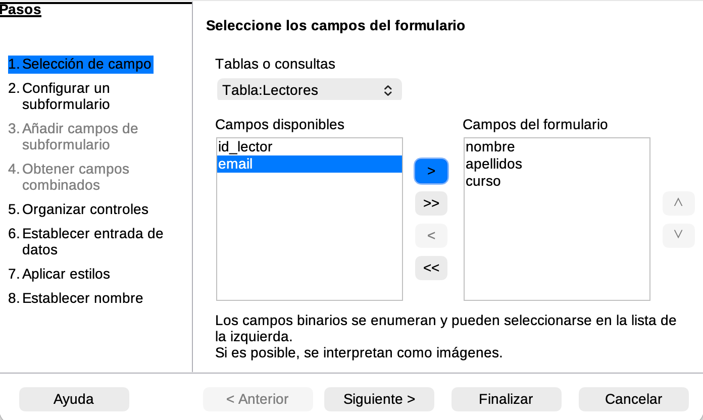
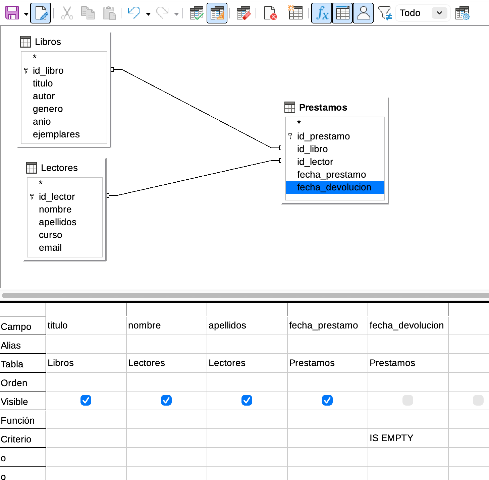
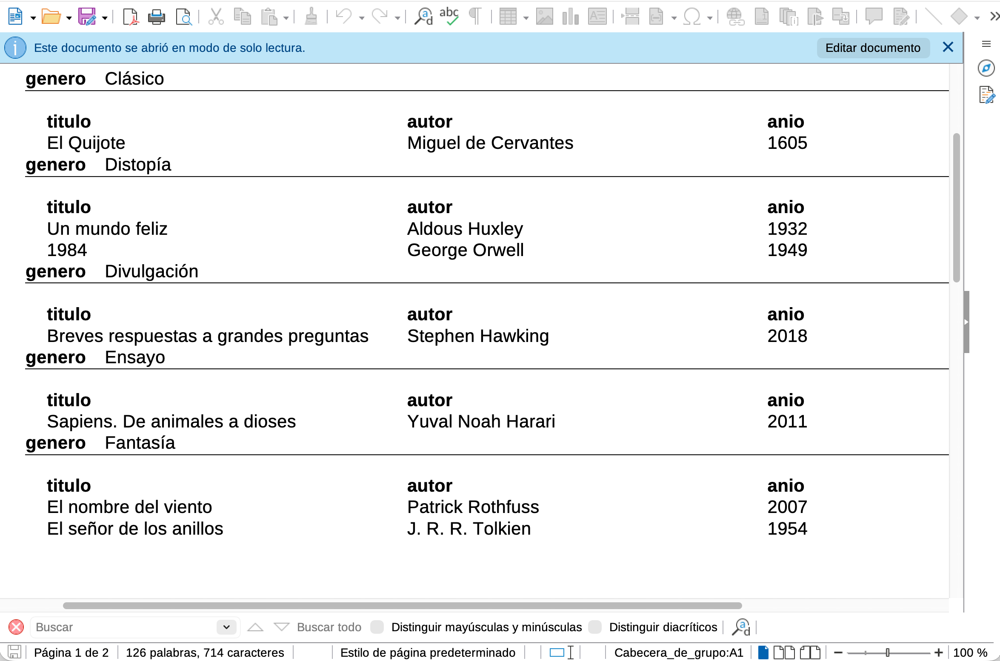

Contenido
Lo que vas a hacer hoy
- Construir un formulario con subformulario para introducir datos cómodamente, sin tocar las hojas de datos.
- Resolver 3 consultas gráficas sobre tu base de datos: una con filtro simple, otra con filtro por rango y otra con filtro por campo vacío.
- Generar un informe agrupado por una categoría.
- Dejar tu base de datos lista para empezar a hablarle en SQL en S4.
TipSigue siendotubase de datos, nobiblioteca
Las capturas de hoy son del ejemplo biblioteca del profesor (con Libros, Lectores y Prestamos). Tú trabajas con la base de datos del tema que elegiste en S1 y completaste en S2. En cada apartado encontrarás una tabla por tema con el ejemplo concreto que te toca y el nombre con el que guardar cada elemento.
ImportanteAntes de empezar: descarga tu archivo de Moodle
Abre la tarea “TAREA - Bases de datos” y descarga el .odb que subiste al final de S2. Trabaja sobre ese archivo. Detalles en Cómo se guarda tu trabajo entre sesiones.
1. Qué vas a construir hoy
Hasta ahora has diseñado tablas y las has conectado. Hoy le añades a tu base de datos tres herramientas para usarla sin tener que tocar las hojas de datos en bruto.
NotaFormulario
Una pantalla pensada para introducir y ver registros de forma cómoda. En lugar de rellenar la hoja de datos a pelo, escribes los valores en una ficha. Un formulario puede llevar un subformulario dentro, que muestra los registros relacionados de la tabla hija.
NotaConsulta gráfica
Una pregunta que le haces a la base de datos sin escribir SQL. La construyes arrastrando tablas y campos en una vista visual y poniendo criterios (igual a esto, mayor que aquello, contiene tal palabra). La base de datos te devuelve solo las filas que cumplen los criterios.
NotaInforme
Un documento imprimible generado a partir de los datos. Sirve para presentar resultados de forma ordenada: listados agrupados por categoría, totales, fichas para entregar. Suele construirse a partir de una tabla o de una consulta.
2. Tu formulario con subformulario
Vas a crear un formulario que muestre los registros de la tabla padre 2 (la que añadiste en S2) y, dentro, un subformulario con los registros de la tabla hija que le pertenecen. Así, al moverte entre fichas de la padre, el subformulario te enseña automáticamente sus hijos relacionados.
En el ejemplo biblioteca del profesor, la padre 2 es Lectores y la hija es Prestamos. El formulario “Préstamos por lector” muestra una ficha por cada lector y, debajo, sus préstamos.
Pasos del asistente
En la barra lateral izquierda, haz clic en Formularios.
En el panel central, pulsa “Usar el asistente para crear un formulario…”.
Paso 1 — Selección de campos. Como tabla base, elige tu padre 2 (en
biblioteca,Lectores). Pasa al panel de la derecha 3 campos identificativos (enbiblioteca:nombre,apellidos,curso).
Asistente de formulario, paso 1: selección de campos de la tabla padre. Paso 2 — Configurar el subformulario. Marca la casilla “Añadir subformulario” y elige “Subformulario basado en relación existente”. En la lista de relaciones disponibles selecciona la que conecta tu padre 2 con la hija (en
biblioteca, la relación conPrestamos).
Asistente, paso 2: añadir subformulario basado en la relación con la tabla hija. Paso 3 — Campos del subformulario. Pasa los campos que te interesa ver de la hija. En
biblioteca:id_libro,fecha_prestamo,fecha_devolucion. Sigue Siguiente hasta el final aceptando los valores por defecto (disposición en columnas, modo de uso “El formulario muestra todos los datos”).
Asistente, paso 3: campos del subformulario sobre la tabla hija. Al terminar, dale un nombre significativo y guarda. En
biblioteca: “Préstamos por lector”.
Tu formulario abre así, con una ficha de la padre arriba y, debajo, los registros de la hija que pertenecen a esa ficha. Al avanzar con las flechas inferiores, el subformulario se actualiza solo.

Tu formulario por tema
Busca tu fila y úsala como referencia. Sustituye los nombres del ejemplo biblioteca por los de tu tema.
| Tema | Tabla base (padre 2) | Subformulario sobre (hija) | Campo de vinculación | Nombre con el que guardarlo |
|---|---|---|---|---|
| 1. Streaming | Usuarios |
Visualizaciones |
id_usuario |
Visualizaciones por usuario |
| 2. Tienda | Clientes |
Pedidos |
id_cliente |
Pedidos por cliente |
| 3. Veterinaria | Dueños |
Visitas |
id_dueno |
Visitas por dueño |
| 4. Liga | Jugadores |
Partidos |
id_jugador |
Partidos por jugador |
| 5. Tatuajes | Empleados |
Trabajos |
id_empleado |
Trabajos por empleado |
| 6. Gimnasio | Clases |
Asistencias |
id_clase |
Asistencias por clase |
TipRecuerda: tu tema, no biblioteca
El procedimiento es idéntico, solo cambian los nombres. Si abres biblioteca.odb por curiosidad, hazlo en una ventana aparte, no en la tuya.
3. Consulta gráfica 1 — filtro simple (igualdad o LIKE)
Una consulta gráfica es una pregunta que le haces a la base de datos. Para construirla:
- Barra lateral → Consultas → “Crear consulta en vista Diseño…”.
- Se abre el diálogo “Añadir tablas o consultas”. Añade las tablas que necesites (las que contienen los campos que vas a mostrar o filtrar) y cierra.
- Arrastra los campos a mostrar desde las cajitas de las tablas hasta las columnas de la rejilla inferior.
- En la fila Criterio de la columna por la que quieras filtrar, escribe la condición. Para una igualdad:
'Fantasía'(con comillas si es texto). Para una coincidencia parcial con texto:LIKE '%viento%'(encuentra cualquier título que contenga la palabra “viento”). - Pulsa el botón Ejecutar consulta (la barra de herramientas tiene un icono de ▶) para ver el resultado. Si te convence, Archivo → Guardar como y dale un nombre significativo.
En el ejemplo biblioteca, una consulta de filtro simple es “Libros de fantasía”: añadimos la tabla Libros, ponemos como columnas titulo, autor y genero, y en la fila Criterio de genero escribimos 'Fantasía'. La consulta devuelve los libros de ese género.
Tu consulta 1 por tema
| Tema | Pregunta que responde | Criterio en el editor gráfico | Nombre con el que guardarla |
|---|---|---|---|
| 1. Streaming | Series de una plataforma concreta | plataforma = 'Netflix' |
Series en Netflix |
| 2. Tienda | Productos de una marca concreta | marca = 'Apple' |
Productos Apple |
| 3. Veterinaria | Mascotas de una especie | especie = 'Perro' |
Mascotas perro |
| 4. Liga | Equipos de una ciudad | ciudad = 'Sevilla' |
Equipos de Sevilla |
| 5. Tatuajes | Empleados de una especialidad | especialidad = 'Color' |
Empleados de color |
| 6. Gimnasio | Socios con plan concreto | plan = 'Premium' |
Socios Premium |
Si en tus datos no tienes ningún registro que cumpla el criterio del ejemplo, adapta el valor al que sí aparezca en tu tabla. Lo que importa es ver cómo el filtro deja pasar solo las filas que cumplen la condición.
TipRecuerda: tu tema, no biblioteca
La tabla Libros de la captura mental del ejemplo no existe en tu base de datos. Tú filtras sobre tus tablas con los datos que tú metiste.
4. Consulta gráfica 2 — filtro por rango (BETWEEN)
Las consultas con rango sirven para preguntar por números o fechas dentro de un intervalo. La sintaxis del editor gráfico es:
- Numérico:
BETWEEN 1950 AND 2000(incluye los dos extremos). - Fechas:
BETWEEN '2025-09-01' AND '2025-12-31'(formato ISO entre comillas simples).
En el ejemplo biblioteca, “Libros publicados entre 1950 y 2000” se construye así: tabla Libros, columnas titulo, autor, anio, criterio en anio igual a BETWEEN 1950 AND 2000. La consulta devuelve solo los libros cuyo año cae en ese intervalo.
Tu consulta 2 por tema
| Tema | Pregunta que responde | Criterio en el editor gráfico | Nombre con el que guardarla |
|---|---|---|---|
| 1. Streaming | Series de una década | anio BETWEEN 2010 AND 2020 |
Series 2010-2020 |
| 2. Tienda | Productos en un rango de precio | precio BETWEEN 100 AND 500 |
Productos 100-500 € |
| 3. Veterinaria | Mascotas en un rango de edad | edad BETWEEN 1 AND 5 |
Mascotas jóvenes |
| 4. Liga | Equipos fundados en una época | anio_fundacion BETWEEN 1900 AND 1950 |
Equipos clásicos |
| 5. Tatuajes | Trabajos en un rango de precio | precio BETWEEN 50 AND 150 |
Trabajos 50-150 € |
| 6. Gimnasio | Socios dados de alta en un periodo | fecha_alta BETWEEN '2024-01-01' AND '2024-12-31' |
Socios 2024 |
Si tu rango deja todo dentro o todo fuera, ajusta los extremos para que el filtro tenga sentido con tus datos.
TipRecuerda: tu tema, no biblioteca
Aplica el rango a tu propia tabla y a tu propio campo. La idea es la misma; los nombres y los números, no.
5. Consulta gráfica 3 — filtro por campo vacío (IS EMPTY)
A veces queremos preguntar por las filas en las que un campo no tiene valor: préstamos sin devolver, clientes sin email, partidos sin resultado registrado todavía. En español, “el campo está vacío”.
WarningEn el editor gráfico de Base se escribeIS EMPTY, noIS NULL
Aunque en SQL puro un campo sin valor se llama NULL, el editor gráfico de LibreOffice Base usa internamente la sintaxis IS EMPTY. Si escribes IS NULL en la fila Criterio, al guardar la consulta verás que Base lo reescribe a IS EMPTY automáticamente. Escribe IS EMPTY directamente y te ahorras la confusión.
En S4 trabajarás con SQL puro en otra herramienta (SQLime) y allí esa misma idea se escribe IS NULL. Es el mismo concepto, dos sintaxis según el contexto: editor gráfico → IS EMPTY; SQL puro → IS NULL.
Tip¿Tus registros no tienen ningún campo vacío?
Si en tus 5 registros has rellenado todos los campos, edita uno y déjale deliberadamente vacío un campo no obligatorio (un email, un teléfono, una fecha de finalización…). Así puedes ver cómo IS EMPTY filtra justo esa fila. Es una prueba útil; no rompe nada.
En el ejemplo biblioteca, la consulta “Libros prestados que no se han devuelto” combina Prestamos y Libros. Las columnas mostradas son Libros.titulo, Prestamos.fecha_prestamo y Prestamos.fecha_devolucion. En la columna fecha_devolucion, fila Criterio, se escribe IS EMPTY, y se desmarca su casilla Visible para que el resultado salga limpio. La consulta devuelve solo los libros que aún siguen prestados.

IS EMPTY en la columna fecha_devolucion.Tu consulta 3 por tema
| Tema | Pregunta que responde | Tabla/campo con criterio | Nombre con el que guardarla |
|---|---|---|---|
| 1. Streaming | Usuarios sin email registrado | Usuarios.email IS EMPTY |
Usuarios sin email |
| 2. Tienda | Clientes sin ciudad | Clientes.ciudad IS EMPTY |
Clientes sin ciudad |
| 3. Veterinaria | Dueños sin teléfono | Dueños.telefono IS EMPTY |
Dueños sin teléfono |
| 4. Liga | Jugadores sin dorsal asignado | Jugadores.dorsal IS EMPTY |
Jugadores sin dorsal |
| 5. Tatuajes | Clientes sin email | Clientes.email IS EMPTY |
Clientes sin email |
| 6. Gimnasio | Clases sin duración registrada | Clases.duracion_min IS EMPTY |
Clases sin duración |
Si en tus datos ya tienes algún registro con ese campo en blanco, perfecto. Si no, deja un campo vacío en uno de tus registros y vuelve a ejecutar la consulta.
TipRecuerda: tu tema, no biblioteca
Libros y Prestamos no están en tu base de datos. Sustituye por las tuyas según la tabla de arriba.
6. Informe agrupado por una categoría
Un informe es un documento listo para imprimir o presentar, generado automáticamente a partir de los datos. Su uso típico aquí es agrupar los registros por un campo categórico (género, marca, especie, posición…) y listar los de cada grupo seguidos.
Warning“Informes” es una entrada propia en la barra lateral
En LibreOffice Base, Informes está al mismo nivel que Tablas, Consultas y Formularios en la barra lateral izquierda. No es un submenú dentro de Formularios. Si buscas “Informes” dentro de “Formularios” no lo vas a encontrar; vuelve a la barra lateral y haz clic directamente en Informes.
Pasos
- Barra lateral → Informes.
- Panel central → “Utilizar asistente para crear un informe…”.
- Origen de datos: elige tu tabla padre 1 (la que diseñaste en S1, en
bibliotecaesLibros). - Campos: pasa al panel derecho los que quieras mostrar. En
biblioteca:titulo,autor,genero,anio. - Etiquetas: deja por defecto, o renómbralas a algo más legible.
- Niveles de agrupación: este es el paso clave. Pasa a la derecha el campo categórico por el que quieres agrupar. En
biblioteca:genero. - Opciones de orden: dentro de cada grupo, ordena por un campo (ej.
tituloascendente). - Estilo: elige uno simple (Predeterminado, Compacto…). Sin pasarse.
- Crear informe: dale un nombre significativo y Finalizar. En
biblioteca: “Catálogo de libros por género”.
El resultado es un documento en el que los registros aparecen agrupados bajo cada valor del campo de agrupación. En el ejemplo, todos los libros de Fantasía bajo “Fantasía”, todos los de Novela bajo “Novela”, etc.

Tu informe por tema
| Tema | Tabla origen | Agrupar por | Nombre con el que guardarlo |
|---|---|---|---|
| 1. Streaming | Series |
plataforma |
Catálogo de series por plataforma |
| 2. Tienda | Productos |
marca |
Catálogo de productos por marca |
| 3. Veterinaria | Mascotas |
especie |
Mascotas por especie |
| 4. Liga | Jugadores |
posicion |
Plantilla por posición |
| 5. Tatuajes | Empleados |
especialidad |
Empleados por especialidad |
| 6. Gimnasio | Clases |
dia_semana |
Clases por día de la semana |
TipRecuerda: tu tema, no biblioteca
Libros y genero no están en tu base de datos. Coge tu tabla y tu campo de la fila correspondiente.
Producto final de S3
Cuando termines, tu base de datos debe contener:
- 1 formulario guardado con su nombre significativo, mostrando una ficha de la padre 2 con un subformulario de la hija debajo.
- 3 consultas gráficas guardadas con sus nombres significativos: una con filtro simple, una con filtro por rango, una con filtro por campo vacío.
- 1 informe guardado, agrupado por un campo categórico de tu padre 1.
Resumen rápido de lo que tienes que tener guardado, según tu tema:
| Tema | Formulario | Consulta 1 | Consulta 2 | Consulta 3 | Informe |
|---|---|---|---|---|---|
| 1. Streaming | Visualizaciones por usuario | Series en Netflix | Series 2010-2020 | Usuarios sin email | Catálogo de series por plataforma |
| 2. Tienda | Pedidos por cliente | Productos Apple | Productos 100-500 € | Clientes sin ciudad | Catálogo de productos por marca |
| 3. Veterinaria | Visitas por dueño | Mascotas perro | Mascotas jóvenes | Dueños sin teléfono | Mascotas por especie |
| 4. Liga | Partidos por jugador | Equipos de Sevilla | Equipos clásicos | Jugadores sin dorsal | Plantilla por posición |
| 5. Tatuajes | Trabajos por empleado | Empleados de color | Trabajos 50-150 € | Clientes sin email | Empleados por especialidad |
| 6. Gimnasio | Asistencias por clase | Socios Premium | Socios 2024 | Clases sin duración | Clases por día de la semana |
A partir de S4 dejas Base y le hablas a la base de datos en SQL puro desde el navegador. Las ideas son las mismas (filtrar, combinar tablas, agrupar) pero con sintaxis. La consulta 3 que hoy escribes como IS EMPTY allí la verás como IS NULL: mismo concepto, dos sintaxis.
ImportanteAntes de irte: sustituye tu archivo en Moodle
En la tarea “TAREA - Bases de datos”: borra el .odb de S2 y sube el .odb actualizado de hoy con el formulario, las 3 consultas y el informe. Estado borrador (no pulses “Entregar tarea”). Detalles en Cómo se guarda tu trabajo entre sesiones.
Si te atascas
| Síntoma | Causa probable | Cómo se arregla |
|---|---|---|
| El asistente de formulario no me deja añadir subformulario | No marcaste la casilla “Añadir subformulario” en el paso 2 | Vuelve atrás y márcala. Selecciona después “basado en relación existente” y elige tu relación padre 2 ↔︎ hija. |
| El subformulario sale vacío al moverme entre fichas | El asistente no detectó la relación o elegiste mal el campo de vinculación | Bórralo y rehazlo: el paso 2 debe usar “Subformulario basado en relación existente”, no manual. |
Mi consulta no devuelve nada con IS NULL |
En el editor gráfico hay que escribir IS EMPTY, no IS NULL |
Cambia el criterio a IS EMPTY y vuelve a ejecutar. |
Al guardar la consulta veo IS EMPTY aunque escribí IS NULL |
Es el comportamiento normal del editor gráfico de Base | No es un error: el editor reescribe la sintaxis. En Vista SQL aparecería como IS NULL. |
| No encuentro “Informes” dentro de Formularios | Informes es categoría propia en la barra lateral, no un submenú | Vuelve a la barra lateral y haz clic en Informes directamente. |
| El informe no me agrupa: los registros salen sueltos | No elegiste un campo en el paso “Niveles de agrupación” | Edita el informe (clic derecho → Editar) o créalo de nuevo y, en ese paso, pasa al panel derecho el campo categórico. |
| La consulta sale con columnas que no quiero ver (FKs) | La columna está marcada como Visible | Desmarca la casilla Visible en esa columna del editor gráfico. |
BETWEEN con fechas me da error |
Faltan las comillas simples o el formato no es ISO | Escribe las fechas como '2025-09-01', con comillas simples y formato aaaa-mm-dd. |
| Mi consulta 3 no devuelve filas | Todos tus registros tienen ese campo lleno | Edita uno de tus registros y deja vacío deliberadamente el campo. Vuelve a ejecutar. |